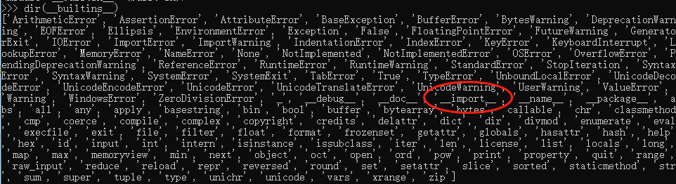
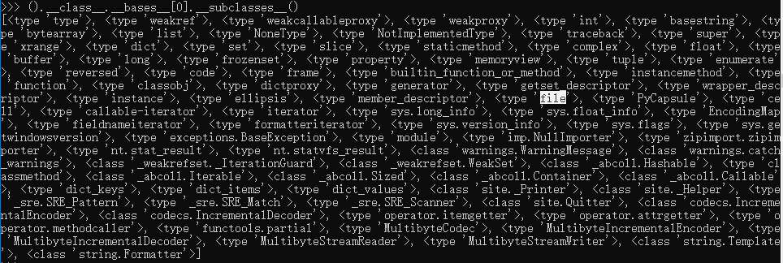

沙盒逃逸简介
沙箱逃逸,就是在给我们的一个代码执行环境下(Oj或使用socat生成的交互式终端),脱离种种过滤和限制,最终成功拿到shell权限的过程
对于python的沙箱逃逸而言,我们来实现目的的最终想法有以下几个
- 使用os包中的popen,system两个函数来直接执行shell
- 使用commands模块中的方法
- 使用subprocess
- 使用写文件到指定位置,再使用其他辅助手段
1 | import os |
但一般题目中会有各种过滤，禁止用户引用敏感的包
1 | import re |
python中导入模块有以下几种方式
import xxxfrom xxx import *__import__('xxx')
而我们绕过敏感包就必须使用其他引用方式
import 关键字__import__函数importlib库
import 是一个关键字,因此,包的名字是直接以 ‘tag’(标记)的方式引入的,但是对于函数和包来说,引入的包的名字就是他们的参数,也就是说,将会以字符串的方式引入
我们可以对原始关键字做出种种处理来bypass掉源码扫描
1 | //__import__函数bypass |
沙盒逃逸各种方法
在python中，不用引入直接使用的内置函数称为 builtin 函数（内联函数），随着builtin这一个 module 自动被引入到环境中
1 | //函数调用执行 |
(在python3.x 版本中,__builtin__变成了builtins,而且需要引入)

1 | //如果一些内联函数在builtins删除 ，我们可以通过reload(__builtins__)重新载入获取一个完整的builtins |
python的object类中集成了很多的基础函数，下面举常见两种方法进入类调用
1 | ().__class__.__bases__[0] |

1 | //其中存在file类 |
在os模块被屏蔽后，可通过其他子类进行调用os模块进行命令执行和文件读写
这里举例通过warnings.catch_warnings类调用
1 | import warnings |
其他的一些执行函数
- timeit
1 | import timeit |
- exec&eval
1 | eval('__import__("os").system("ipconfig")') |
- platform
1 | import platform |
- 变量替换
1 | a = open |
- 函数名后面加点空格换一行
1 | print open |
- 使用第三方库的执行命令的函数
1 | //如果程序中调用了第三方的库，恰好这个库有执行命令的函数，那么肯定是再好不过了 |
- 使用别名
1 | import os as o |
- 字符串拼接
1 | "l"+"s" |
- 字符串编码或者其他操作
1 | //如果过滤的是键值对中的key(为了强调是字符串类型) |
参考链接
【VULNERABLITY】python sandbox escape
记录一下，后补……